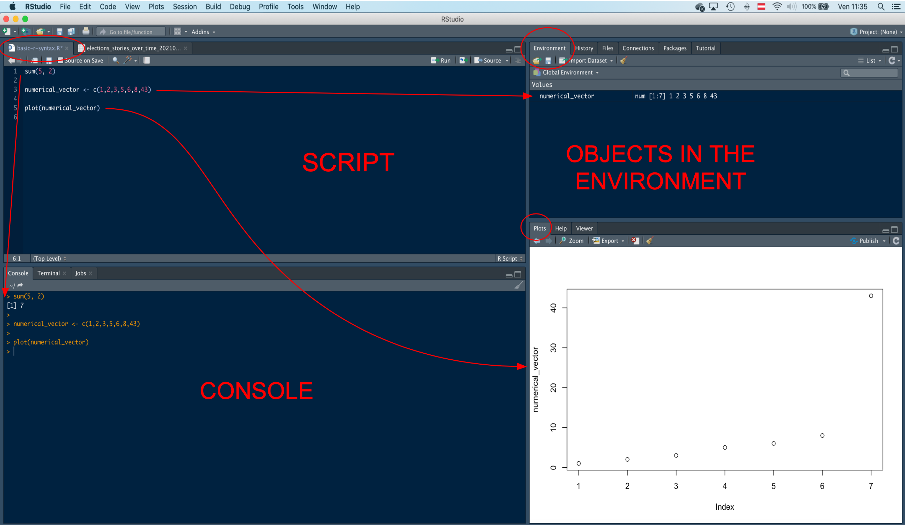
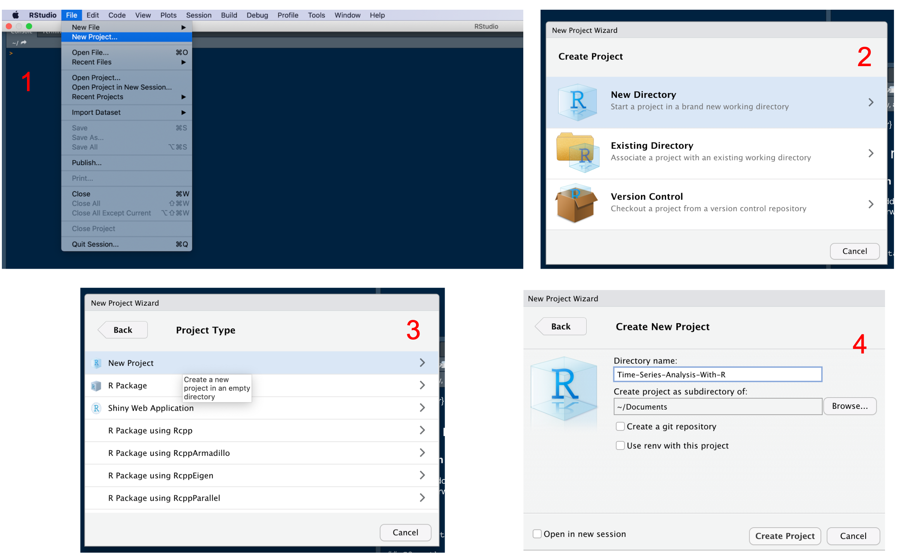
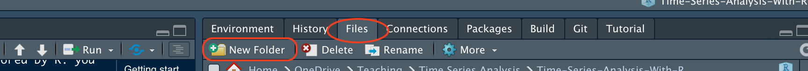
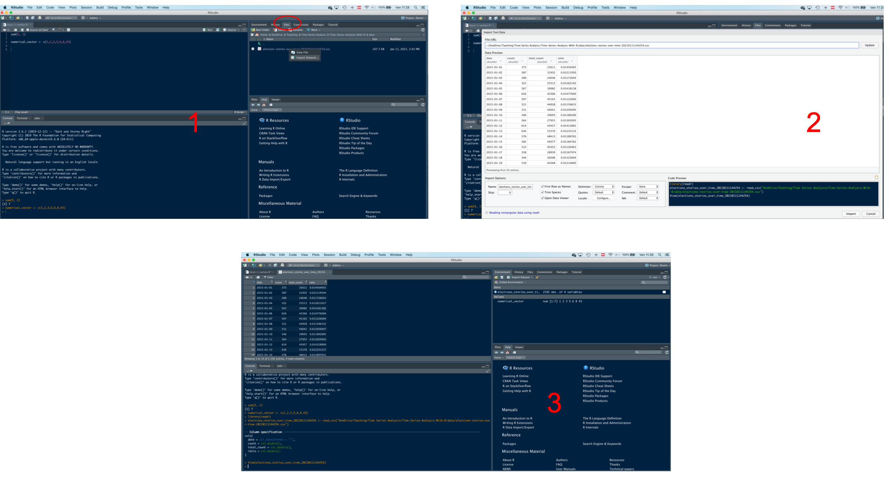
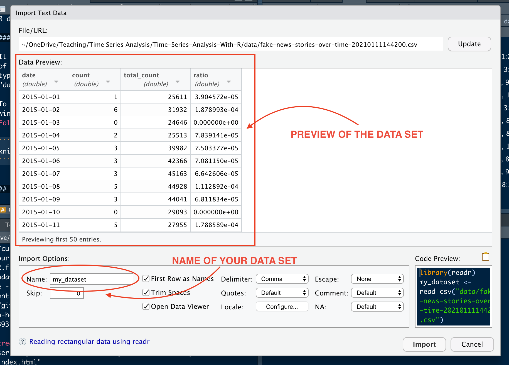

5 + 3[1] 8Dr. Nicola Righetti, PhD
Know the meaning of the following terms: script, object and some important R object (matrix, data.frame, and vector), statistical graph/chart, package, function
Know the main components of the RStudio interface and their functions
Know how to create a new RStudio project, and open an RStudio project you created
Know how to create new folders in the RStudio project
Know how to create, save, and open a script
Know how to execute a line of code
Know how to install and load a package
Know how to load and view a data set
The RStudio interface is structured into four quadrants. What follows is a general description of a standard RStudio layout, but the actual layout can be customized by the user.

Here you can open and work on the scripts. A script is simply a text file containing a set of commands (code) used to perform analyses. Script files are authomatically saved with extension “.r”.
The top-right quadrant includes the window Environment. The user can find here data sets and other objects created and loaded in a RStudio work session. In R, objects are everything a user can manipulate. For example, a data set, a function to transform data, a more or less complex algorithm to obtain a result, are all “objects”.
In this quadrant, there are other tabs, such as Files, History, Connections, Packages, etc. The File tab can be particularly useful: here the user can navigate files and folders to find, for example, the scripts and the data sets to upload.
The bottom-right quadrant is where graphical outputs, mostly plots and other statistical charts, are shown. Statistical graphs or charts are representations of statistical data in graphical form. There are several types of graphs. For example, bar charts, histograms, timeplots, scatter plots, box plots, etc.
In this quadrant, there is also a tab for R packages. Packages (or libraries) are collections of functions for performing specific operations and analyses. Functions can be conceived as “machines” that generate output from an input. For instance, the “addition” is a function: it receives two or more numbers as input and generates an output that corresponds to their sum.
Here you can also find the Help section. Help is great for learning more about the functions. There are two ways you can open the Help of a function. You can write in the search box the name of the function you want to learn about, or you can write a question mark in the console followed by the name of a function (for example, “?sum”).
On the bottom left is the R Console window, where the code gets executed and the output is produced. It is possible to type and run commands directly into the console. Contrary to what occurs when the code is written in a script, in this case the code will not be saved.
When starting a new data analysis project, we can create a dedicated work space. This dedicated work space is called a project. A project includes all the folders and files (e.g., scripts and data sets) necessary to conduct the analyses for the project’s purposes, as well as the outputs of the analysis (charts, tables, etc.).
To create a new project with RStudio, follows these steps:

You have now created a project along with its own folder. The name of the folder is identical to that of the project. Inside the folder, there is a file with extension .Rproj and the same name of the project (e.g., “ADA_MMCP.Rproj”). This is the file you have to open whenever you want to work on the project.
Projects can be complex, so it is important to keep everything in order. To this aim, it is a good practice to create, in the main folder of the project, sub-folders dedicated to different types of files used in the project. To create a new folder, go to the Files tab, in the upper-right quadrant of the RStudio interface, click on New Folder, and give a name to your folder.

Create a folder for the data sets, called data. You will save here the data sets we are going to use during the course.
Once the project has been created, we can open a new script and save it. We said that a script is a file that contains code. Script files are authomatically saved with extension .r. You can open, update, and save your script whenever you like. Saving code is important to save time! Otherwise, you would have to write the same code whenever you work on the project. Create a script named introduction_to_r. You will use it to write and run the code we are going to use today.
To execute (or “run”) the code in the script, we can highlight the line of code we want to run, and then click the Run button. This button can be found on the top-right corner of the editor window. Alternatively, you can place the cursor on the row containing the code to be executed, and then clic Run. Instead of the Run botton, the code can be executed by using the Ctrl + Enter key combination (also Command + Enter on a Mac).
> In your script “introduction_to_r”, write a simple addition and execute it.
Now, save the script by clicking on the disk symbol you see in the top left corner of the editor. Close the script by clicking on the small “x” (upper right corner of the editor). Finally, in the “Files” window (upper left-hand quadrant), find the “introduction_to_r” script and reopen it in RStudio.
Packages (also libraries) are kinds of “toolboxes” containing sets of functions used to perform different types of operations.
R already includes several default functions and packages, but several additional packages are available. It is possible to install a package by using the menu (Tools/Install Packages…) or by using the function install.packages(“name-of-the-package-here”).
A very useful package is tidyverse. Tidyverse actually includes several other packages, such as ggplot2 to create charts, and dplyr to manipulate data sets (“data wrangling”).
To use the functions contained in a package, you need to load the package into the work environment first. This can be done with by using the function library(). For instance, we can load tidyverse with the following code:
── Attaching packages ─────────────────────────────────────── tidyverse 1.3.2 ──
✔ ggplot2 3.4.0 ✔ purrr 1.0.1
✔ tibble 3.1.8 ✔ dplyr 1.1.0
✔ tidyr 1.3.0 ✔ stringr 1.5.0
✔ readr 2.1.3 ✔ forcats 1.0.0
── Conflicts ────────────────────────────────────────── tidyverse_conflicts() ──
✖ dplyr::filter() masks stats::filter()
✖ dplyr::lag() masks stats::lag()There are a few important syntactic rules to keep in mind when writing code in R.
R recognizes lower and upper case letters. For example, the lowercase command sum is something completly different from the command Sum or SUM. In this case, while the function sum exists, there is no function called Sum or SUM.
Only certain types of quotation marks are recognized by R. If you copy a command from the slides or other online sources, and paste them in R, you may encounter an error because of an incorrect character used for quotes.
# this is wrong (notice the error in the console)
glbwarm <- read.csv(file = "data/glbwarm.csv")
# this is also wrong (notice the error in the console)
glbwarm <- read.csv(file = `data/glbwarm.csv`)
# this works
glbwarm <- read.csv(file = "data/glbwarm.csv")
# this also works
glbwarm <- read.csv(file = 'data/glbwarm.csv')You can load data into R in at least two different ways. First, you can navigate through your files/folders using the File window, and once you have found the data set, you can simply click on it and follow the RStudio semi-automated import process.


Otherwise, you can upload a data set by using a function. Since a data set can be saved in different formats (e.g., “.csv”, “.rds”, “.xlsx”, “.sav”, etc.), there are different functions to upload it. For instance, the function read.csv can be used to import a .csv file (one of the most common extension).
Download from Moodle the data set “glbwarm.csv”, save it into your folder “data”, and load it in R by using the following code:
This function creates a object called glbwarm. You can see this object in the Environment window (top-right quadrant). We said that an object is something that can be manipulated in R. In this case, the object is a data set. You can manipulate it, for example, to perform analyses, create new data, etc.
Also note that, in R, we use an arrow <- to save the data set in an object. The arrow “transfers” the result of a function (its output) into an object. If you run a function without saving the output in an object through the arrow sign, the output is printed on the console.
govact posemot negemot ideology age sex partyid
1 3.6 3.67 4.67 6 61 0 2
2 5.0 2.00 2.33 2 55 0 1
3 6.6 2.33 3.67 1 85 1 1
4 1.0 5.00 5.00 1 59 0 1
5 4.0 2.33 1.67 4 22 1 1
6 7.0 1.00 6.00 3 34 0 2This way you may take a look at the output (but this is not the right way to do that), but you cannot manipulate it. It is only when you create an object containing the output information of the function (using the arrow sign and a name for the object), that you can continue working on it.
To take a look at the data set, you can use the function head() to print the first few rows in the console.
govact posemot negemot ideology age sex partyid
1 3.6 3.67 4.67 6 61 0 2
2 5.0 2.00 2.33 2 55 0 1
3 6.6 2.33 3.67 1 85 1 1
4 1.0 5.00 5.00 1 59 0 1
5 4.0 2.33 1.67 4 22 1 1
6 7.0 1.00 6.00 3 34 0 2You can also view the data set in a separate window by using the function View().
Another way to explore a data set is through the function str(). This function allows the user to see the type of variables in the data set.
'data.frame': 815 obs. of 7 variables:
$ govact : num 3.6 5 6.6 1 4 7 6.8 5.6 6 2.6 ...
$ posemot : num 3.67 2 2.33 5 2.33 1 2.33 4 5 5 ...
$ negemot : num 4.67 2.33 3.67 5 1.67 6 4 5.33 6 2 ...
$ ideology: int 6 2 1 1 4 3 4 5 4 7 ...
$ age : int 61 55 85 59 22 34 47 65 50 60 ...
$ sex : int 0 0 1 0 1 0 1 1 1 1 ...
$ partyid : int 2 1 1 1 1 2 1 1 2 3 ...A similar function, included in the tidyverse package, is glimpse()
Rows: 815
Columns: 7
$ govact <dbl> 3.6, 5.0, 6.6, 1.0, 4.0, 7.0, 6.8, 5.6, 6.0, 2.6, 1.4, 5.6, 7…
$ posemot <dbl> 3.67, 2.00, 2.33, 5.00, 2.33, 1.00, 2.33, 4.00, 5.00, 5.00, 1…
$ negemot <dbl> 4.67, 2.33, 3.67, 5.00, 1.67, 6.00, 4.00, 5.33, 6.00, 2.00, 1…
$ ideology <int> 6, 2, 1, 1, 4, 3, 4, 5, 4, 7, 6, 4, 2, 4, 5, 2, 6, 4, 2, 4, 4…
$ age <int> 61, 55, 85, 59, 22, 34, 47, 65, 50, 60, 71, 60, 71, 59, 32, 3…
$ sex <int> 0, 0, 1, 0, 1, 0, 1, 1, 1, 1, 1, 0, 1, 0, 1, 1, 1, 0, 0, 0, 0…
$ partyid <int> 2, 1, 1, 1, 1, 2, 1, 1, 2, 3, 2, 1, 1, 1, 1, 1, 2, 3, 1, 3, 2…In this case, we can see that the first three variables are numerical (num), and the second three integers (int). Numeric (also double) is a data type that contains real numbers (). Integers is a data type that contains integer numbers.
There are also other types of data, such as character (char) for character values, logical for logical values (TRUE and FALSE), and factors to describe items that can have a finite number of values (gender: male, female, other; education, etc.).
Sometimes, variables represets dates and times. Just to make an example of data set inclusing several type of data, we create a data set named data_set_example by running the following code.
Rows: 4
Columns: 7
$ name <chr> "Karl", "Emma", "Sebastian", "Sarah"
$ gender <fct> M, F, Other, M
$ age <int> 30, 23, 12, 45
$ austrian <lgl> TRUE, FALSE, FALSE, TRUE
$ salary <fct> high, medium, low, medium
$ partisanship <dbl> -1.33, 4.56, -3.12, 2.54
$ date <date> 2020-01-01, 2020-03-01, 2020-01-02, 2020-01-03Data analysis operations basically consist of manipulations of objects through functions. An object is an entity composed of a name and a value (such as a number) or more complex information (such as a data set). The arrow <- sign is used to create objects, or to assign/update a value, if the object already exists.
Let’s make an example. Let’s create an object with name object_2 and value equal to 2.
Now, let’s write the name of the object in the script and run the command (put the cursor on the line of the name, and click run in the top right corner of the editor window, or Control + Enter). The value assigned to the object will be printed on the console.
Object names can be freely chosen. However, avoid using names that are already used for other objects and functions. For example, avoid giving the name “read.csv” to a data set, as this would overwrite the “read.csv” function. Similarly, if you use “object_2” to save the output of another function, or to represent another value, you will delete the previous value (2):
Sometimes you may want to delete an object from the environment. You can do that with the function rm() (notice the object disappearing from the environment, in the Environment window).
Since the object is equivalent to its value, an object with a numerical value can be used, for example, to perform arithmetical operations.
There are different types of object. We take into consideration some of the most important ones: Vectors, Matrices, Data Frames, Lists, Functions.
Vectors are sequences of values:
A numeric vector can be used as a term for mathematical operations.
[1] 2 4 6 8 10 12 14 16 18 20 [1] 4 5 6 7 8 9 10 11 12 13Vectors may consist of digits but also other symbols. For instance, a vector of letters is a character vector:
Another type of R object is the matrix (or array). A matrix is an object made up of a series of numeric vectors. In other words, it is a table where rows and columns contain numeric values.
[,1] [,2] [,3] [,4] [,5]
[1,] 1 11 21 31 41
[2,] 2 12 22 32 42
[3,] 3 13 23 33 43
[4,] 4 14 24 34 44
[5,] 5 15 25 35 45
[6,] 6 16 26 36 46
[7,] 7 17 27 37 47
[8,] 8 18 28 38 48
[9,] 9 19 29 39 49
[10,] 10 20 30 40 50As matrixes are mathematical objects, they can contain only numbers.
A data.frame is a very important object for data analysis and in this course we will work almost exclusively with data.frames.
Data frames are similar to matrices, but they can contain several types of data: numbers, characters (for instance, the texts of an answer), factors (such as gender, or ordered categories, such as “low”, “medium”, “high”), and dates. We have already encountered a couple of examples of data frames:
govact posemot negemot ideology age sex partyid
1 3.6 3.67 4.67 6 61 0 2
2 5.0 2.00 2.33 2 55 0 1
3 6.6 2.33 3.67 1 85 1 1
4 1.0 5.00 5.00 1 59 0 1
5 4.0 2.33 1.67 4 22 1 1
6 7.0 1.00 6.00 3 34 0 2 name gender age austrian salary partisanship date
1 Karl M 30 TRUE high -1.33 2020-01-01
2 Emma F 23 FALSE medium 4.56 2020-03-01
3 Sebastian Other 12 FALSE low -3.12 2020-01-02
4 Sarah M 45 TRUE medium 2.54 2020-01-03Data frames are important because they represent data sets in R. For instance, if you import a csv or an Excel file in R, the corresponding R object is a data.frame. You can see the type of data by using the function
[1] "data.frame"[1] "data.frame"[1] "numeric"[1] "matrix" "array" The columns of a data set/data frame represent variables, and rows represent cases. For example, the global warming data set (glbwarm) comprises 815 rows/cases and 7 columns/variables. This data set results from measuring 815 persons on 7 dimensions (e.g., support for government, ideology, age, etc.).
govact posemot negemot ideology age sex partyid
1 3.6 3.67 4.67 6 61 0 2
2 5.0 2.00 2.33 2 55 0 1
3 6.6 2.33 3.67 1 85 1 1
4 1.0 5.00 5.00 1 59 0 1
5 4.0 2.33 1.67 4 22 1 1
6 7.0 1.00 6.00 3 34 0 2The function dim() can be used to find the number of rows and columns of a data set. The first and second figure in the output is the number of rows and column, respectively.
The functions str() or glimpse() permits to see the names of the columns/variables. Another way to see them is using the function names().
We can access the columns of a data.frame by using the following sintax: name of the data frame, dollar sign, name of the column. For isntance, to access the column “age” of the data.frame “glbwarm”:
[1] 61 55 85 59 22 34 47 65 50 60You may have noticed that this is just a vector. Indeed, data.frames are object composed by a series of vectors.
Lists are another common type of object. Lists can be used to contain different types of objects. For example, a list may include a matrix, a number, and a data.frame. We will not work with this type of object in this course.
[[1]]
[,1] [,2] [,3] [,4] [,5]
[1,] 1 11 21 31 41
[2,] 2 12 22 32 42
[3,] 3 13 23 33 43
[4,] 4 14 24 34 44
[5,] 5 15 25 35 45
[6,] 6 16 26 36 46
[7,] 7 17 27 37 47
[8,] 8 18 28 38 48
[9,] 9 19 29 39 49
[10,] 10 20 30 40 50
[[2]]
[1] 2
[[3]]
name gender age austrian salary partisanship date
1 Karl M 30 TRUE high -1.33 2020-01-01
2 Emma F 23 FALSE medium 4.56 2020-03-01
3 Sebastian Other 12 FALSE low -3.12 2020-01-02
4 Sarah M 45 TRUE medium 2.54 2020-01-03An object can also represent a function. We said that functions can be conceived as “mechanisms” that generate output from an input. Functions can transform other objects based on specific rules. For instance, addition is a function that receives two or more numbers as input and generates an output that corresponds to the sum of these numbers.
`
A function has a name (the name of the function, like the name of any other object, e.g., the function sum) and one or more arguments. Arguments are written in parentheses, while the function name is left out of parentheses. Since functions transform objects, among the arguments there is always an object or a value, for instance a numerical value, which is the content the function is applied to. Usually, there are also several other arguments, either mandatory or optional, which modify the behavior of the function.
In this course we’ll use statistical functions to perform data analysis like linear regression, moderation, mediation, and conditional process analysis. For example, the name of the linear regression function in R is lm.
Call:
lm(formula = glbwarm$govact ~ glbwarm$ideology)
Residuals:
Min 1Q Median 3Q Max
-4.7477 -0.7595 0.0287 0.8051 3.3109
Coefficients:
Estimate Std. Error t value Pr(>|t|)
(Intercept) 6.12419 0.12481 49.07 <2e-16 ***
glbwarm$ideology -0.37645 0.02867 -13.13 <2e-16 ***
---
Signif. codes: 0 '***' 0.001 '**' 0.01 '*' 0.05 '.' 0.1 ' ' 1
Residual standard error: 1.236 on 813 degrees of freedom
Multiple R-squared: 0.175, Adjusted R-squared: 0.174
F-statistic: 172.4 on 1 and 813 DF, p-value: < 2.2e-16Review the content of this lecture
Familiarize with R and RStudio
Detailed information on the R language (e.g., data structures, types of objects, etc.) can be found in the R Manual). A detailed overview of R programming language is beyond the objectives of this course, and not necessary to perform the analyses we’ll discuss. However, you can use this manual as a reference if you have doubts or would like to learn more.
Several resources about R are freely available online. YouTube features several good introductory videos to R. An important resource for programmers (both professionals and beginners) is https://stackoverflow.com.
Open the RStudio project you created today
Open the script you created today
Write and run a few mathematical operations in the script file (e.g., 3+2, 5/3, etc.)
Create a new object containing the output of the function sum (e.g., my_sum <- sum(4, 8)) and use this object to perform another mathematical operation of your choice
Save the updated script and close it
Create and save a new script
Copy all the data sets you find on Moodle in your “data” folder
Load one of the data set
Take a look at the data set using the functions View, str, and glimpse (remember to load the package tidyverse before using the glimpse function)
Access one of the column of the data set (name_of_dataframe + dollar sign “$” + name of the column) using the dollar sign